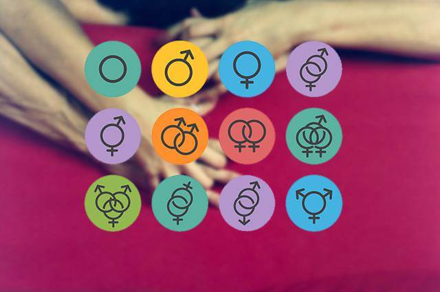
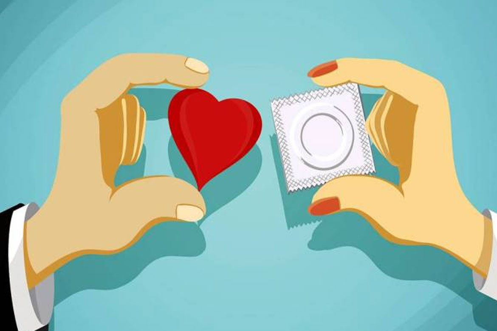
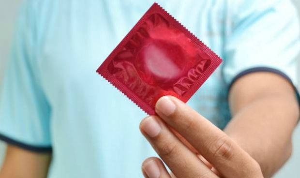

Sexualidad
Introducción
La sexualidad es el conjunto de condiciones que caracterizan el sexo de cada persona o animal. Desde el punto de vista histórico cultural, es el conjunto de fenómenos emocionales, de conducta y de prácticas asociadas a la búsqueda de emoción sexual, que marcan de manera decisiva al ser humano en todas y cada una de las fases determinantes de su desarrollo. A continuación le proporcionamos los siguientes temas a tratar en este articulo
¿Qué es la sexualidad en la adolescencia?
La sexualidad en la adolescencia es aquella en la que el joven se desarrolla física y mentalmente, adquiriendo los caracteres sexuales secundarios (los que no tienen que ver con el órgano reproductor, como la nuez en los hombres o el ensanchamiento de las caderas en las mujeres) y desarrollando el pensamiento maduro; pero también despierta un comportamiento sexual, se transforma en un ser sexual.
La sexualidad no sólo tiene que ver con el acto de reproducirse, sino que representa la generación de deseos, sentimientos, fantasías y emociones, es decir, el desarrollo de una identidad sexual, que se puede definir como aquella parte de la identidad del individuo que le permite reconocerse y actuar como un ser sexual.
Etapas del desarrollo de la sexualidad
- Adolescencia temprana (11-13 años): Durante esta etapa, que se caracteriza por la velocidad de los cambios físicos en el adolescente, el joven se encuentra aún lejos del deseo sexual adulto, por lo que se presenta como una fase de autoexploración (a menudo a través de la masturbación), debido a los nuevos cambios físicos y psíquicos que experimenta (como la aparición de los primeros impulsos sexuales y de la espermarquia o primera eyaculación), y también de exploración del contacto con el otro sexo.
- Adolescencia media (14-17 años): El adolescente ya está casi completamente desarrollado, sus órganos sexuales están listos para la reproducción y el deseo sexual se incrementa. En esta fase se desarrolla una sensación de invulnerabilidad y fortaleza que inducen al joven a comportarse de una forma narcisista. Se empieza a buscar el contacto habitual con el otro sexo y pueden llegar las primeras relaciones sexuales. El adolescente no sólo responde a sus impulsos sexuales, sino también a su narcisismo, es decir, pone a prueba la propia capacidad de atraer al otro. También se considera que durante esta etapa se produce el auge de las fantasías románticas.Las relaciones sociales fuera del entorno familiar, especialmente con amigos, empiezan a tener preponderancia, por lo que el adolescente contrapone los valores y la educación sexual recibida de sus padres con la de sus amigos (en muchas ocasiones llenas de mitos derivados de la poca o nula experiencia sexual), lo que puede acarrear riesgos, si a esto se suma que el adolescente aún no ha desarrollado del todo el pensamiento abstracto y en algunas ocasiones le cuesta pensar en las consecuencias de sus actos. Además, al no haber desarrollado por completo el pensamiento adulto, el adolescente utiliza los sentidos para expresar sus emociones
- Adolescencia tardía (17-21 años): El adolescente se ha desarrollado por completo, física y psíquicamente. La capacidad de pensar en abstracto y de ser consciente de las consecuencias futuras de los actos hace que el joven pueda mantener relaciones sexuales maduras y seguras. El deseo ya no sólo responde a un estímulo o pulsión sexual, sino que el adolescente, ya adulto, comienza a buscar otros valores en sus relaciones sociales, como la confianza o la reciprocidad.
La importancia de recibir una buena educación sexual
La pubertad y el desarrollo sexual son etapas de cambios constantes, donde el deseo y los impulsos sexuales dominan a una parte racional que no está del todo desarrollada. Recibir una buena educación sexual es muy importante, no sólo a corto plazo, es decir, para que el adolescente supere sin riesgos sus etapas de maduración física y psíquica, sino también para establecer el comportamiento sexual que tendrá el joven cuando sea adulto.
Durante la adolescencia, el joven está expuesto a riesgos que se deben evitar mediante medidas preventivas:
- La sexualidad entra dentro de la intimidad: Las relaciones sexuales pertenecen a la intimidad de las personas, por lo que no es necesario compartir los detalles sobre las mismas, a no ser que se quiera hacer. Los padres y el entorno no deben presionar al adolescente.
- Desarrollo de habilidades sociales y de autocontrol: Los impulsos sexuales dominan a los racionales durante la adolescencia, sobre todo al comienzo de la fase de adolescencia media, donde el joven ya ha desarrollado por completo sus órganos sexuales pero no el pensamiento adulto. La educación debe proveer al adolescente de conocimientos que le permitan desarrollar conductas y comportamientos sexuales correctos.
- Informar: Es vital dotar al adolescente de la información necesaria sobre los riesgos que traen las relaciones sexuales sin protección (embarazo precoz, Enfermedades de Transmisión Sexual, etcétera), así como de los beneficios que reporta practicar sexo seguro.
La salud sexual es mucho más que no tener enfermedades.
La salud sexual es sentirse bien como mujer o como hombre, es sentir que las relaciones (afectivas y sexuales) te proporcionan bienestar. Por eso es preciso que cada persona aprenda a conocer sus genitales y su cuerpo, y su manera de sentir, gozar y amar, que aprenda a aceptarse y gustarse lo más posible, y que aprenda a vivir su sexualidad del modo que le resulte más satisfactorio, que le permita ser feliz.
Aprender sobre sexualidad nos puede ayudar a conseguir muchas cosas:
- A conocernos mejor, nuestros cuerpos, nuestros deseos…
- A encontrarnos mejor en las relaciones de pareja.
- A disfrutar más en las relaciones sexuales.
- A conocer más sobre reproducción, maternidad, paternidad…
- A cuidar nuestra salud, evitando riesgos innecesarios.
- A saber que se puede disfrutar de la sexualidad sin tener pareja y cómo hacerlo.
- A contribuir mejor a la educación sexual de nuestras hijas y de nuestros hijos.
¿Qué es la orientación sexual?
define por quién se siente atracción (física, emocional, espiritual y románticamente) y la intensidad de esa atracción. El continuo incluye diversas opciones:
- Heterosexual: siente atracción por personas del sexo opuesto.
- Bisexual: siente atracción hacia mujeres y hombres por igual.
- Asexual: no siente atracción sexual hacia ningún sexo ni género.
- Pansexual: siente atracción por las personas, independientemente de su sexo o género.
- Homosexual: siente atracción por personas del mismo sexo.
Cabe señalar también la diferencia entre comportamiento y la orientación sexual. P.ej. una persona puede ser bisexual pero sólo tener relaciones sexuales con el sexo opuesto debido a convencionalismos sociales. Así, como se ha comentado, las opciones son varias dentro de cada una de las dimensiones comentadas, pero las posibilidades en la sexualidad aún son mayores si combinamos las diferentes dimensiones. Llamamos a esto diversidad sexual. Las opciones son infinitas y esa variabilidad es justamente la que da la riqueza a nuestra especie.

¿Qué es el sexo “seguro”?
Cuando hay relaciones sexuales es posible un embarazo. Cuando se habla de sexo seguro se refiere a tener relaciones sexuales “protegidas”, es decir, tomar medidas para no quedarse embarazada, o para no contraer una enfermedad que se puede transmitir por vía sexual. Esto se consigue con métodos que impiden un encuentro del espermatozoide con el óvulo (preservativo) o que destrozan un embrión en las primeras horas o días de su vida (píldoras). Estas medidas son poco saludables, no tan seguras como se dice, y además moralmente reprobables por manipular el acto sexual y la fertilidad, y por destruir una vida en sus inicios.
¿Qué diferencias psico-sexuales hay entre chicos y chicas?
Casi todos los chicos están convencidos de que las chicas tienen los mismos impulsos sexuales que ellos. Pero eso no es así. El hombre se predispone sexualmente con más facilidad y reacciona más a estímulos visuales. Sus sentimientos en la actividad sexual no le tocan tan a fondo ni dejan tanta huella como en la mujer. La predisposición de las mujeres es más profunda y ellas reaccionan más lentamente a los estímulos sexuales. Hay más implicación psíquica en la vida sexual en la mujer que en el hombre. Por todo ello el conocimiento mutuo, el trato, la fidelidad, la lealtad, la continencia, y la aceptación de los compromisos que conlleva el amor, son parte muy importante para una unión sexual satisfactoria para el hombre y la mujer.
¿Qué es el sexo “responsable”?
Tratar las cuestiones relacionadas con la sexualidad con responsabilidad quiere decir para los matrimonios respetar el acto sexual y la fertilidad sin manipulaciones, y para los jóvenes no casados abstenerse de relaciones sexuales hasta que tengan una relación amorosa estable que les permita fundar una familia y aceptar a los hijos que pueden nacer como consecuencia de estas relaciones. El impulso sexual en el ser humano es dominable; aprender a tener dominio de sí es una preparación estupenda para luego ser fiel en el matrimonio. La continencia sexual no es una represión sino una expectativa alegre, una renuncia temporal y voluntaria que surge de un respeto mutuo y como prueba de amor.
Enfermedades de transmisión sexual (ETS)
Las enfermedades de transmisión sexual son infecciones comunes que se transmiten por contacto sexual. Muchas de estas no son graves y su tratamiento es sencillo. Sin embargo, a veces pueden ser peligrosas. Afortunadamente, es fácil hacerse pruebas para detectarlas. Aquí encontrarás información sobre cómo puedes evitar contagiarte una enfermedad de transmisión sexual o transmitírsela a otras personas. Da el primer paso hacia una vida sexual más segura y sana.
¿Debo preocuparme por las ETS?
Seguramente ya has escuchado hablar de infecciones de transmisión sexual como gonorrea, clamidia, herpes, VIH y otras. Las ETS son bastante comunes -muchas personas tendrán una en algún momento de su vida. Las personas jóvenes entre 15 y 24 años tienen una probabilidad mayor de contraer una ETS que cualquier otro grupo. Algunas de las ETS más comunes (como gonorrea y clamidia) pueden ser curadas con antibióticos, y no son peligrosas si se tratan de inmediato. Pero otras pueden causar graves problemas de salud, especialmente sin tratamiento.
A pesar de que las ETS son comunes, a veces las personas sienten vergüenza o desconcierto cuando se contagian. Pero las ETS son como cualquier infección que pasa de una persona a otra - es solo que aquí la via de contagio es el sexo-.
Si tienes una ETS no significa que seas "sucio" o una mala persona. Sólo eres una de las millones de personas que se han infectado. Como ocurre con otras infecciones, existen antibióticos para mantenerte saludable si te contagias una ETS. También hay maneras de protegerte de las ETS.
¿Cómo prevenir las ETS?
La única manera 100% garantizada de evitar una ETS es evitar toda clase de contacto sexual, ya sea sexo vaginal, anal u oral, y contacto genital de piel con piel con otra persona. No hay sexo = no hay ETS. Pero si tienes sexo, practicar sexo seguro reduce las probabilidades de contagio.
El sexo seguro significa usar condones, condones femeninos o barreras bucales. Estas barreras detienen los fluidos y algo del roce piel a piel que transmiten las ETS. Puedes usar condones para sexo vaginal, sexo anal o sexo oral en un pene. Puedes utilizar condones femeninos para sexo vaginal y sexo anal. Y puedes usar barreras bucales para sexo oral en la vulva o el ano. Lee más sobre usar condones y barreras bucales.

Dos de las mejores maneras de prevenir las ETS son el no tener sexo y usar condones cuando lo tienes. Hay también otros pasos que puedes seguir:
- Hazte una prueba de detección de ETS. Si tienes una infección puedes tratarte para mantenerte sano y evitar el contagio de la ETS a otras personas.
- Habla con tu pareja. Una buena comunicación, especialmente si se trata de sexo seguro, puede ayudar a construir confianza y acercarlos como pareja.
- Elige actividades menos riesgosas. Hay otras maneras de ser sexual y mantenerse seguro. Algunas de las cosas que puedes practicar sin riesgo de contagio de ETS son: masturbación, frotar en seco (frotar los genitales uno contra el otro, con la ropa puesta), hablar temas sexis, y abrazarse.
¿Cómo se contagian las ETS?
Las ETS se contagian generalmente al tener sexo vaginal, anal u oral sin protección (por ejemplo, sin usar un condón). Pero no siempre es tan simple. Existen muchas ETS y se contagian de maneras diferentes.
Algunas infecciones se contagian via fluidos corporales como el semen, fluidos vaginales y la sangre. Otros se contagian cuando la piel de la boca o genitales se frota contra la piel de otra persona.
En resumen: cualquier tipo de contacto sexual que involucre fluidos corporales o toque de genitales te pone en riesgo de una ETS. Es por eso que es fundamental el uso de condones u otras barreras (como las barreras bucales) -que ayudan a bloquear la piel y fluidos que contagian las ETS.
El sexo vaginal (pene-en-vagina) y el sexo anal (pene-en-ano) conllevan un riesgo especial si no usas condón -al usarlo es mucho más seguro. El sexo oral (boca a vulva, pene o ano) también puede contagiar ciertas ETS (como el herpes o VPH). Usar condones o barreras bucales para el sexo oral puede protegerte a tí y a tu pareja.
Algunas ETS (como el VIH) pueden contagiarse al compartir jeringas (para drogas, piercings o tatuajes), o a un bebé en el momento de nacer o al amamantar. Pero no puedes contagiarte una ETS a través de un contacto casual, como abrazarse, tomarse de las manos o del asiento de un baño/sanitario. Solo puedes contagiarte una ETS por contacto directo con semen, fluidos vaginales, sangre o roce de genitales piel con piel.
Las ETS no aparecen por arte de magia -solo puedes contagiarte de alguien que ya la tiene. Pero muchas personas que tienen una ETS no lo saben, ya que muchas veces no hay sintomatología. Es por eso que es tan importante el examen de detección de ETS y el uso de condones.
¿Cómo sé si alguien tiene una ETS?
La ÚNICA manera de saber con certeza si tú o alguien más tiene una ETS es a través de un examen de detección de ETS. Generalmente, las ETS no muestran síntomas. Asi que solo por observar el pene o vagina de una persona no puede decirte si tiene una ETS o no. Las personas con una ETS se ven y sienten completamente normales -pero igual pueden contagiar a otros.
Algunas veces las ETS causan problemas y puedes notarlos. Hazte un examen de detección de ETS si tienes alguno de estos síntomas en tus genitales o cerca de ellos:
- dolor
- hinchazón
- Protuberancias raras, sarpullidos o lastimaduras
- Picazón y/o sensación de ardor
- Dolor o ardor al orinar
- Dolor o ardor al orinar
- Una descarga inusual del pene
- Una descarga de flujo de olor, color o textura diferente a lo habitual
- Sangrado de tus genitales (que no es tu menstruación)
¿Cuáles son las Enfermedades de Transmisión Sexual más comunes?
VIH
Es la más letal de todas las que existen. Este virus destruye la capacidad del cuerpo para defenderse de las infecciones. Se transmite por el contacto con diversos líquidos corporales de personas infectadas, como la sangre, la leche materna, el semen o las secreciones vaginales. Las señales tempranas de la enfemedad incluyen mucha fatiga y fiebre. Si bien no existe cura para el SIDA, hay tratamientos que pueden tenerlo bajo control y hacer más lento su progreso.
Clamidia
Es la enfermedad bacteriológica más común. En la mayoría de los casos no manifiesta síntomas. Puede infectar la células del cuello del útero, la uretra, el recto y, a veces, la garganta y los ojos. En las mujeres, los síntomas son flujo abundante, sangrado anormal entre los períodos menstruales o durante el acto sexual, dolor al tener relaciones o al orinar y en la parte baja del abdomen. En los hombres se manifiesta con un líquido blancuzco que sale de la uretra y dolor al orinar o en los testículos.
Herpes genital
El herpes genital es causado por dos tipos de virus. Estos virus se llaman herpes simple del tipo 1 y herpes simple del tipo 2. Los síntomas pueden aparecer mucho tiempo después de haber sido infectados, pero una vez que nos hemos contagiado, el virus permanece de por vida. El virus produce unas úlceras alrededor de la vagina y en el pene, aunque la mayoría de las personas que tiene herpes no presenta síntomas o si los presenta son muy leves.
Gonorrea
Es una infección bacteriológica que puede infectar la uretra, el cuello del útero, el recto, el ano y la garganta, si se ha practicado sexo oral. El período de incubación, es decir, el tiempo que pasa desde que se entra en contacto con la bacteria hasta la aparición de los síntomas, es de 2-5 días. Los síntomas pueden ser ardor al orinar, líquido blanco o amarillo del pene, flujo vaginal amarillento e irritación o flujo del ano. Una infección de gonorrea durante un embarazo puede causar problemas graves al bebé.
Sífilis
Aunque se cura fácilmente con antibióticos o penicilina, puede causar complicaciones a largo plazo o la muerte, si no se trata de manera adecuada. Normalmente, se desarrolla en varias fases y puede manifestarse comenzando por una llaga indolora y pasando después a un sarpullido o síntomas parecidos a los de la gripe. Se lo puede contagiar la embarazada a su bebé, lo que se conoce como sífilis congénita.
Virus del Papiloma Humano (VPH)
Es la ETS más común tanto en hombres como en mujeres, ya que se calcula que el 90% de las personas con una vida sexual activa entra en contacto con el virus. No todas ellas se infectan: en el 90% de los casos, el sistema inmunológico resuelve la situación. En la mayoría de los casos, el VPH desaparece por sí solo y no causa ningún problema de salud. Pero cuando el VPH no desaparece, puede causar problemas de salud como verrugas genitales (condilomas) o cáncer. Hay vacunas que pueden prevenirlo. Es importante acudir a los controles ginecológicos rutinarios para que la citología detecte si hay alteraciones celulares y se puedan practicar pruebas más específicas. El control ginecológico permite diagnosticar no solo el VPH, sino también, en el peor de los casos, el cáncer de cérvix en estadios tempranos, a tiempo de extirparlo mediante un procedimiento quirúrgico relativamente poco invasivo denominado conización.
Tricomoniasis
En la mayoría de los casos no llega a manifestarse. Sus principales síntomas pueden ser dolor al orinar, flujo con mal olor, picor en la vagina, líquido en la uretra.
Hepatitis B
Es una enfermedad del hígado. Algunas personas pueden combatir la infección y eliminar el virus. En otras, la infección permanece y da lugar a una enfermedad «crónica» o de por vida. Puede causar problemas graves de salud. La mejor forma de prevenir la infección es a través de vacunas.
Candidiasis
Infección causada por hongos. Muchas veces no hay síntomas. El tratamiento es simple y consiste en cremas, óvulos vaginales, pastillas o una combinación de los tres. Si no se trata, generalmente se van solos, pues el cuerpo los combate de manera natural, pero en el hombre pueden provocar inflamaciones de la uretra.
¿Cuál es el mejor método anticonceptivo?
La única manera infalible 100% de no quedar embarazada es no tener sexo vaginal (pene-en-vagina) o realizar cualquier actividad sexual donde el esperma entre en contacto con la vulva o en la vagina (esto se llama abstinencia).
Pero si vas a tener sexo vaginal, entonces la mejor manera de prevenir un embarazo es usar un método efectivo de anticoncepción (como un DIU o implante) + un condón.

Algunos anticonceptivos dan mejor resultados que otros. Los mejores anticonceptivos, los más eficaces para la prevención de un embarazo son los implantes y DIUs - lo más convenientes y más infalibles de usar.
Otros métodos, como la pastilla, anillo, parche e inyección son también muy buenos para la prevención de un embarazo si los usas a la perfección. Pero las personas no son perfectas y estos métodos tienen más posibilidades de fallar que los implantes y DIUs.
Es realmente importante asegurar el uso correcto de los anticonceptivos. Esto significa que no puedes olvidar tomar la pastilla, cambiar el anillo o darte la inyección a tiempo -o esto te pondrá en riesgo de embarazo. Asi que el mejor método es aquel que siempre uses correctamente. Apúntate en este breve test anticonceptivo para averiguar cuáles son los mejores métodos para tí.
Sin importar el método que elijas, puedes elevar tu protección a nivel super poder al usar un anticonceptivo más un condón juntos.
Condones + Anticonceptivos= Protección Extra
Los condones son como el superhéroe de un sexo más seguro: son la única manera de protegerte de un embarazo y de las ETS durante el sexo vaginal.
No hay un método anticonceptivo perfecto. Asi que el uso de los condones + otro tipo de anticonceptivo (como el implante, el DIU, o pastilla) te dará una protección extra en caso de alguno de los dos falle. Y los condones reducen drásticamente las posibilidades de contraer toda clase de enfermedades de transmisión sexual, como el VIH, la gonorrea, clamidia y herpes.
Otra gran ventaja de los condones es que los puedes conseguir casi en cualquier lado, como autoservicios, tiendas, supermercados y estaciones de servicio. Los condones no cuestan mucho dinero, y a veces pueden ser gratuitos en las clínicas comunitarias, centros de salud escolares o centros de salud.
Preguntas frecuentes
1. ESTAR ENAMORADO, ¿ES BUENO PARA LA SALUD?
Sí. Es un punto en el que coinciden de forma unánime los especialistas: las relaciones de pareja cariñosas y una frecuente actividad sexual favorecen la salud.
Esto es por varias cuestiones. La primera, nuestras hormonas, ya que en la fase de excitación aumenta la secreción de oxitocina. El efecto causado, en este caso, de forma inconsciente, nos sitúa en el modo de atender las necesidades del otro, además de intervenir en la formación de los sentimientos.
Además, en la unión de los sexos se elimina estrés y nos invade una buena sensación de plenitud y goce
2. ¿POR QUÉ NOS LATE EL CORAZÓN CON MÁS FUERZA CUANDO ESTAMOS EXCITADOS O ENAMORADOS?
Este mecanismo es muy similar al que sentimos cuando nos invade el miedo: corazón desbocado, rodillas con flojera, sensación de irritabilidad muy característica en la boca de nuestro estómago. Todo esto depende de nuestro sistema nervioso vegetativo, que es el que rige las funciones corporales que no dependen de nuestra voluntad, como es el ritmo y la intensidad del ritmo cardíaco.
Cuando nuestro cerebro detecta algún tipo de amenaza, o en el caso del amor, la presencia del 'objeto de deseo', se desencadena un conjunto de reacciones encaminadas a poner el uerpo en condiciones de atención y velocidad de reacción máximas. Se envía la alarma al hipotálamo y éste disponde la secreción urgente de hormonas del estrés, sobre todo la adrenalina. Al mismo tiempo, determinados haces nerviosos transmiten al corazón la orden de estar preparado para cualquier eventualidad.
3. ¿PUEDEN LAS MUJERES SER IMPOTENTES?
No. Existe una dificultad similar en las mujeres: la falta de turgencia del clítoris, aunque esto no impide, como en el caso de la disfunción eréctil, la participación pasiva en el coito, pero sí dificulta la obtención del placer sexual.
4. ¿POR QUÉ LOS HOMBRES SE DESPIERTAN CON UNA ERECCIÓN POR LA MAÑANA?
Se atribuye a que la vejiga está llena y ejerce fuerte presión sobre los vasos sanguíneos del bajo vientre, con lo que evitar el retorno de la circulación hacia el corazón. Esta retención de sangre es el que produce la turgencia de los cuerpos cavernosos del pene. El efecto es el mismo causado por la excitación sexual, pero sin deseo en este caso.
Las ereciones matutinas en el hombre que se cree impotente demuestran que no lo es fisiológicamente, sino en relación con otras circunstacias como puedan ser la timidez o los complejos psicológicos.
5. ¿POR QUÉ LA ERECCIÓN SE DESVÍA HACIA UN LADO EN ALGUNOS HOMBRES?
Una cierta incurvación no debe preocupar, siempre y cuando no suponga una dificultad para practicar el coito. Esto es una condición congénita diferente al llamado mal de Peyronie, que puede aparecer en la edad adulta y responde a una formación de tejido cicatricial en uno de los cuerpos cavernosos del pene, en forma de placa dura y no flexible.
Es por eso que el pene se curva durante la erección, formando en ocasiones ángulos inverosímiles. El remedio es quirúrgico.
6. ¿CÓMO SE PRODUCE LA ERECCIÓN DEL PENE CON LA EXCITACIÓN?
La erección del pene se controla mediante un 'centro de placer' que reside en el cerebro, y a su vez por dos centros nerviosos de la médula espinal.
Al contemplar una persona que nos gusta y nos atrae sexualmente, provocan la excitación de unos nervios de nuestro sistema vegetativo de los que no tenemos control ya que no dependen de nuestra voluntad y modifican la circulación de la sangre en toda la región pélvica.
Esto provoca que el volumen de sangre que entra a través de las arterias del pene aumente unas 20 veces su volumen. Esta sangre va a parar a los llamados cuerpos cavernosos, los cuales tienen una estructura esponja que les permite aumentar el volumen. A su vez, también se estrechan las venas por donde normalmente se liberaría el exceso de nivel de sangre. La presión en los cuerpos cavernosos aumenta considerablemente y con ella las dimensiones del pene, así como rigidez y dureza.
Esto no solo ocurre, como los hombres saben, al excitarse con una mujer que le atrae, sino con la simple visión de imágenes excitantes o su recuerdo en la memoria.
7. ¿EL HOMBRE PUEDE SUPRIMIR LA ERECCIÓN VOLUNTARIAMENTE?
Lo cierto es que no. Añadido a la información que se facilita en la imagen anterior, ha habido un par de estudios en el que voluntarios han intentado inhibir su excitación mientras los investigadores les mostraban imágenes insinuantes: ninguno de ellos lo consiguieron. De ahí que los antiguos dijeran que el pene tiene voluntad propia.
8. ¿QUÉ PASA EN EL CUERPO DE UNA MUJER CUANDO VE UN HOMBRE QUE LE GUSTA?
La secuencia de cambios en su cuerpo es rápida y compleja, ya que participan muchos sistemas del organismo.
La vista y, en ocasiones el olfato, alertan al cerebro de una mujer de 'sujeto interesante a la vista'. A través del sistema vegetativo, sobre el que no tenemos control, se envía a las glándulas suprarrenales la orden de segregar adrenalina, hormona que acelera el ritmo cardíaco, dilata los bronquios, aumenta la presión arterial y estimula el sistema nervioso central.
Todo el organismo femenino entra en disposición de máxima actividad. Sube la tensión sanguínea y el ritmo de los latidos del corazón.
Por su parte, el control central de la actividad hormonal, residente en el hipotálamo, envía un gran número de órdenes a través de neurotransmisores y vías nerviosas que provocan la activación de la secreción de estrógenas. La vagina se humedece y las glándulas sudoríparas funcionan a toda velocidad. Junto con otras glándulas, envían efluvios que envuelven al hombre observado y tratan de atraerlo (cuestión que los especialistas e industriales de la perfumería están tratando de imitar).
En el cerebro, se frena la producción de seretonina (con efecto sedante) y también de la melatonina (hormona del sueño). Por otro lado, se activa la síntesis de las endorfinas, cuyo efecto euforizante es el responsable de que la mujer lo vea todo de 'color de rosa'. El centro de apetito transmite saciedad aunque la persona lleve sin comer horas.
9. ¿CUÁL ES EL TAMAÑO NORMAL DEL PENE?
Una de las grandes preguntas que un hombre parece nunca dejar de hacerse. El científico Alfred Kinsey quiso en su día, a fin de establecer con criterio científico un 'promedio' y descartar las exageraciones habituales. Para ello, tomo las medidas sobre penes erectos, en la cara superior de los mismos y desde la punta hasta la base del pene. Las medidas del diámetro, se tomaron hacia la mitad de la longitud.
Así, Kinsey estableció que la longitud media estaba en unos 15 centímetros, donde entraba el 24% de los hombres. El pene más pequeño encontrado entre los voluntarios fue de 9,5cm. En cuanto a la categoría 'extra-largo' de más de 23 cm., tan solo un 0,1% se llevaron el título.
Por lo que se refiere a la circunferencia, se halló un promedio de entre 11,5 y 12,5 cm. El pene más delgado midió 3,8 cm de circunferencia y el más grueso, 17,2 cm.
Cuando más crece el pene es en la adolescencia del hombre.
10. ¿POR QUÉ DECAE EL VIGOR DE LA ERECCIÓN CON LA EDAD?
Esto se debe a la proliferación de un tejido conjuntivo de consistencia fibrosa, que va reemplazando el tejido esponjoso de los cuerpos del pene.
Este proceso comienza alrededor de los 30 y 40 años de edad y, a consecuencia de él, se reduce la elasticidad y la dilatabilidad de los cuerpos cavernosos. También las venas y arterias de la zona perineal se ven afectadas y la circulación de la sangre ya no tiene tanto vigor. Esto provoca que el pene no se endurezca con la misma facilidad que en edades más jóvenes, y dado que las venas tampoco se contraen del todo, la erección se pierde antes.
Al final, incluso, se van perdiendo también las erecciones espontáneas de 'buenos días', una señal inequívoca del envejecimiento sexual del individuo.
11. ¿ES PERJUDICIAL LA MASTURBACIÓN?
Para nada: al contrario. Darnos placer a nosotros mismos, no solo es una gran forma de conocernos a nosotros mismos y quitarnos tensiones acumuladas, si no también una buena forma de ayudarnos en nuestras relaciones íntimas con un compañero.
Esto es porque, cuando nadie nos ve, nos atrevemos a ser nosotros mismos, sin inhibiciones ni vergüenzas. Entonces nos encontramos con lo que nos gusta o nos hace sentir mejor, lo cual, habitualmente, transmitimos a nuestro compañero de sábanas, lo que implica que puede ser un complemento valioso para mejorar nuestras actitudes amatorias.
12. ¿POR QUÉ HAY GENTE A LA QUE LE EXCITAN SEXUALMENTE LAS SITUACIONES DE RIESGO?
Hay quienes tienen algo así como una “adicción” a la adrenalina, la cual produce efectos químicos con sensaciones que evocan las del orgasmo. Además, la adrenalina estimula la liberación de dopamina en el sistema nervioso central, una sustancia que provoca sensación de bienestar.
Parece que los amantes del riesgo podrían llevar versiones de baja actividad del gen DRD4 situado en el cromosoma 11, e implicado en los flujos cerebrales de dopamina, uno de los neurotransmisores que estimulan los circuitos del placer. Eso implica que la dopamina tiene menos efecto, y que el individuo experimenta menos placer del habitual, así que busca situaciones más fuertes para saciarse.
13. ¿POR QUÉ INCLINAMOS LA CABEZA HACIA LA DERECHA AL BESARNOS?
Los fetos y los recién nacidos ya tienden a dormir con el cuello inclinado hacia la derecha. Y el 80% de las madres acunan a sus bebés en su brazo izquierdo, lo cual deja libre la mejilla derecha para besos y caricias. De ahí en adelante, lo habitual será que asociemos ese lado con el cariño.
14. ¿POR QUÉ SENTIMOS MARIPOSAS EN EL ESTÓMAGO?
Según algunos estudios, el responsable es nuestro 'segundo cerebro'. Científicos norteamericanos han demostrado que los 100 millones de células que rodean el tracto digestivo funcionan como una especie de cerebro secundario abdominal, dedicado a controlar gran número de reacciones de nuestro cuerpo en correspondencia con los procesos psíquicos. Sus informaciones influyen por medio de una serie de transmisiones nerviosas sobre las decisiones que toma el cerebro 'pensante'.
Según confirman estoes estudios, los sentimientos y las intuiciones suben 'de las tripas', junto con otras muchas señales procedentes del vientre, como las náuseas, el vómito y el dolor. En el cerebro, la memoria emotiva recoge y almacena todas esas informaciones viscerales. Por ejemplo, las sensaciones desagradables suscitadas por una situación de peligro (como el dolor de barriga que sentimos ante un examen inminente cuando no hemos estudiado), como el cosquilleo que provoca la cercanía del sujeto deseado o la revolución que se nos desata en las tripas cuando se nos acerca un sujeto que no queremos tratar.
Todas las ocasiones en que nos vemos en una situación que ya hemos vivido antes, los sentimientos y nuestra conducta quedan determinados por los datos inconscientes que se extraen del gigantesco catálogo de la emotividad. En ese banco de memoria, la sensacion de tener mariposas en el epigastrio se vincula con el enamoramiento o 'flechazo'.
15. ¿PUEDE UNA MUJER ALCANZAR EL ORGASMO CON SOLO TOCARLE LOS PECHOS?
No solamente es posible, sino que es medianamente frecuente. La Fundación Kinsey, la más prestigiosa del mundo en cuanto a investigación sexológica, realizó un estudio en el que revelaba que el 12% de las mujeres llegaba al orgasmo “empujando y amasando” sus pechos (ellas mismas o su compañero).
Pero lo más efectivo, con diferencia, es la succión de los pezones: el mismo estudio cifró en 57 el porcentaje de féminas que alcanzaba el clímax mediante esta práctica. Los senos son el principal atractivo para los hombres, seguidos de los glúteos.
16. ¿PIERDEN SENSIBILIDAD LAS MUJERES DESPUÉS DE HABER SIDO MADRES?
No necesariamente. Si acaso, en la zona inferior, si es que han tenido que hacerles una episiotomía (una pequeña “ampliación” de la vagina para agrandar el canal de parto). Y casi siempre esta insensibilidad se ciñe a la pequeña cicatriz que queda.
El clítoris, desde luego, no queda afectado de ninguna manera y sigue estando en perfecta forma para el disfrute del sexo. Lo que es sabido que ocurre es que la secreción de prolactina que acompaña al parto (para generar leche materna) reduce la libido, pero solo durante el período que dura la lactancia. Es la llamada cuarentena.
17. ¿CUÁL ES EL MEJOR DÍA PARA EL SEXO?
Según un estudio llevado a cabo por investigadores de la London School of Economics, el jueves, día central de la semana según la norma ISO 8601, es el mejor día para disfrutar de las relaciones sexuales. ¿Por qué? Según parece, esta relacionado con la sincronización de los niveles hormonales del hombre y la mujer.
¿La clave?: Tenemos un reloj interno de unas 24 horas. Este, está dentro de nuestro sistema en un nivel celular. Incluso las algas tienen un sistema similar interno, según una investigación de las Universidades de Cambridge y Edimburgo.
Es decir, que si "configuras" tu reloj biológico un poquito más temprano las mañanas de los jueves, cuando los niveles de testosterona y estrógeno son casi cinco veces más altos que en otros momentos, ten por seguro que saldrás de casa un poco más feliz que otros días.
18. ¿Qué son las fantasías sexuales?
Las fantasías sexuales son deseos de experimentar el sexo de maneras no tradicionales. Es algo que por lo general no es tema de conversación.
¿Tiene más dudas?
puede solicitar información en el chat en linea de PsicApp, donde uno de nuestros expertos lo atendera.